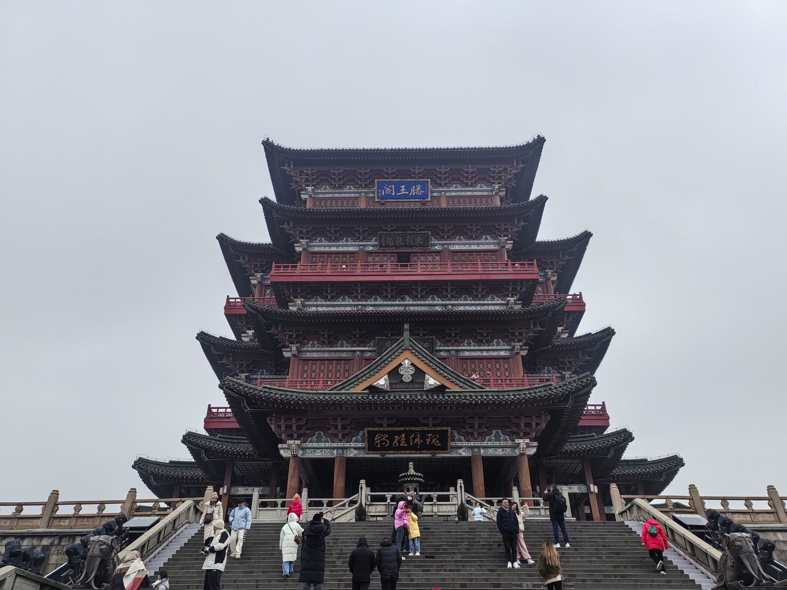
东湖区（赣江畔）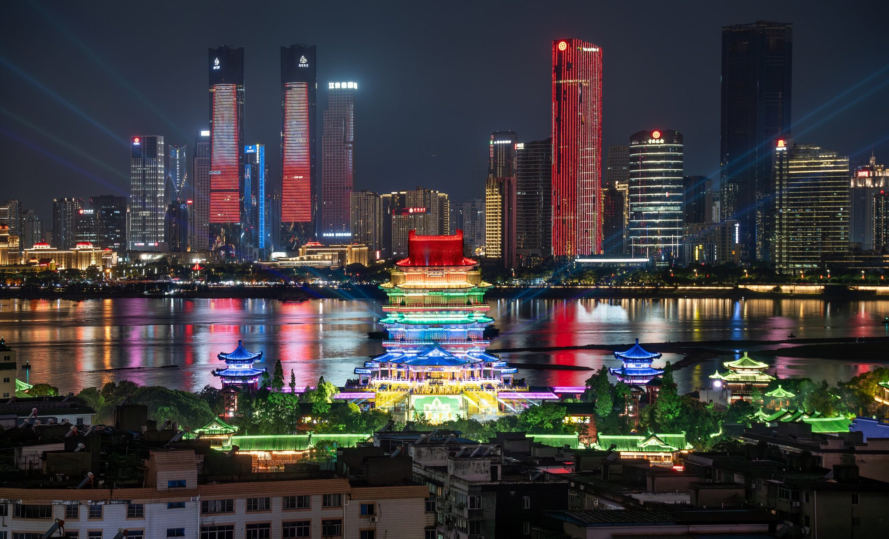
NANCHANG · THREE DAYS
滕阁秋风与赣江灯火ITINERARY
三天走完南昌的三种气质：滕王阁与老城的千年文脉、赣江两岸的夜色灯火、汉代海昏侯的封国故地与市井烟火。
10.30—11.013 天
旅行路线南昌
内容包含行程 · 餐饮 · 探索
TRIP COMPANION · 2026旅程概览3 天
南昌的行程、餐饮与出发准备，都可以从这里继续。
01
THE ROUTE
3 天行程
DAY 01
滕王阁与老城巷陌
012026-10-30 · 滕王阁与老城巷陌上午登滕王阁看赣江与红谷滩天际线，中午到石头街吃一碗拌粉配肉坨汤，下午逛万寿宫街区与八一起义纪念馆、傍晚在八一广场收个日落，晚上到蛤蟆街吃鲜辣小炒，再上船看一江两岸的灯光秀。＋
上午
登阁与江景09:00 从滕王阁东门进（地铁 1 号线滕王阁站步行约 800 米）：先登阁看“明三暗七”格局与历代重建史料，最高层回廊俯瞰赣江与对岸红谷滩；11:15 沿北园免费步道慢慢绕出，把“落霞与孤鹜齐飞”的江景机位踩一遍。
下午老城核心：万寿宫与八一起义纪念馆11:45 打车约 10 分钟到石头街，在秦胖子肉陀良心店吃拌粉配肉坨汤（人均约 11 元，去晚可能卖完）；12:45 步行逛万寿宫历史文化街区与珠宝街；14:00 到一街之隔的八一起义纪念馆（免费、公众号实名预约，约 1.5 小时）；16:10 地铁一站到八一广场看纪念塔与广场轴线，顺路可进江西省美术馆免费看展。
晚上蛤蟆街晚餐与赣江夜航17:45 到蛤蟆街（豫章后街）的打平伙·鲜辣小炒吃晚饭——菜单有“微辣 / 南昌辣 / 绝杀辣”分级，第一次来建议先点南昌辣；19:15 步行约 1 公里到滕王阁游轮码头候船，19:30 的夜航班次顺着赣江看两岸灯光秀（约 50 分钟），下船后地铁回酒店。
MINI ROUTE滕王阁与老城巷陌
MINI ROUTE
滕王阁与老城巷陌时间、顺序、交通与停留开始导航 高德地图
DAY 02
赣江西岸与天际线
022026-10-31 · 赣江西岸与天际线上午在江西省博物馆把江西的青铜与陶瓷看个够，中午到丽景路吃一顿黑珍珠赣菜，下午沿赣江市民公园散步，日落前坐上 160 米高的南昌之星，晚餐在红角洲尝精致赣菜，最后赶 19:30 的秋水广场音乐喷泉。＋
上午
博物馆里的赣鄱文明09:30 地铁 1 号线到珠江路站、步行约 700 米进江西省博物馆新馆（周二至周日 9:00—17:00、周一闭馆；2026 年 9 月起散客免预约刷证入馆，节假日方式可能调整、看公众号）：重点看“物华天宝 人杰地灵”基本陈列与新干大洋洲商代青铜器，出馆就是省文化中心建筑群与江景。
下午赣江市民公园与摩天轮12:00 打车约 10 分钟到丽景路，在“春天来了”吃江西茶油血鸭等经典赣菜（2025 黑珍珠一钻，人均约 220 元；想省预算可在附近商场简餐）；14:00 沿赣江市民公园滨江步道慢慢走，对岸就是滕王阁与老城轮廓；16:30 到南昌之星摩天轮（9:00—23:00、22:00 停止检票），日落时段上轮，160 米高空一次看齐日景、蓝调与亮灯。
晚上精致赣菜与秋水广场喷泉18:15 到赣江新天地的炉忆牡丹亭吃精致赣菜（同为黑珍珠一钻，蟹粉豆腐正逢十月蟹季）；19:20 打车约 10 分钟赶到秋水广场，19:30 音乐喷泉准时开演、对岸即为滕王阁（夏秋两场 19:30 / 20:30；10 月中旬起或转冬令时 19:00 / 20:00，出发前看官方通告）。
DAY 03
海昏侯与老城收尾
032026-11-01 · 海昏侯与老城收尾清晨先到大士院吃一碗拌粉配瓦罐汤，上午逛佑民寺与绳金塔，中午在站前西路喝汤吃粉，13:40 乘滕王阁—海昏侯直通车去看“金色海昏”的金器与竹简，傍晚回城，用一顿南昌水煮的夜宵给三天收官。＋
上午
大士院“过早”与老城双塔07:30 到大士院老街“过早”：小罗子的肉沫拌粉配皮蛋肉饼汤、老南昌白糖糕 1 元 1 个，越早越有烟火气；09:00 步行约 15 分钟到佑民寺（免费，9:00—18:00），看铜佛殿与“南昌三宝”中唯一幸存的南唐铜钟；10:50 地铁两站到绳金塔，塔下街区串起千佛寺、文庙与隆兴戏台。
中午站前西路的汤与粉12:05 在塔旁的龙老五汤店喝瓦罐汤、来一碗拌粉（30 多年老店，人均约 24 元）；13:25 打车回滕王阁南门，赶 13:40 的海昏侯直通车（单程约 60 分钟、往返 30 元，发车时刻与购票以现场及“海昏侯国遗址公园”公众号为准）。
晚上海昏侯·金色海昏与夜宵收官14:40 抵达海昏侯国遗址公园：先看“金色海昏”的金饼、马蹄金与五铢钱，再到墎墩苑看刘贺墓园原址（全价票 60 元、含观光车 75 元；“书香海昏”展厅自 2025 年 11 月起暂停、行前看官方公众号）；17:30 直通车返程，约 18:30 回到滕王阁；19:00 打车到会堂东路的小欧水煮，用一顿“水煮配油炸”的南昌夜宵收尾。
MINI ROUTE海昏侯与老城收尾
MINI ROUTE
海昏侯与老城收尾时间、顺序、交通与停留开始导航 高德地图
02
SIGHTS
景点指南
查看全部景点＋
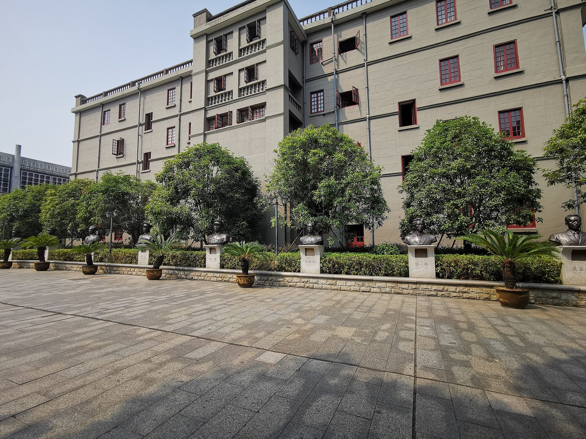
西湖区（中山路）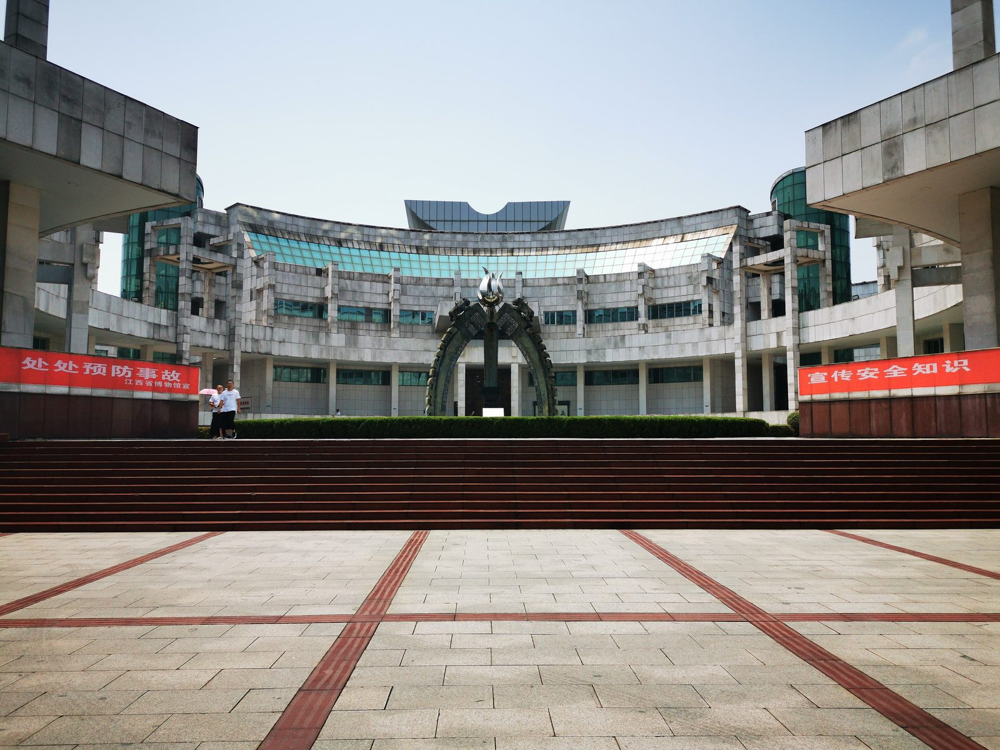
红谷滩区（凤凰洲）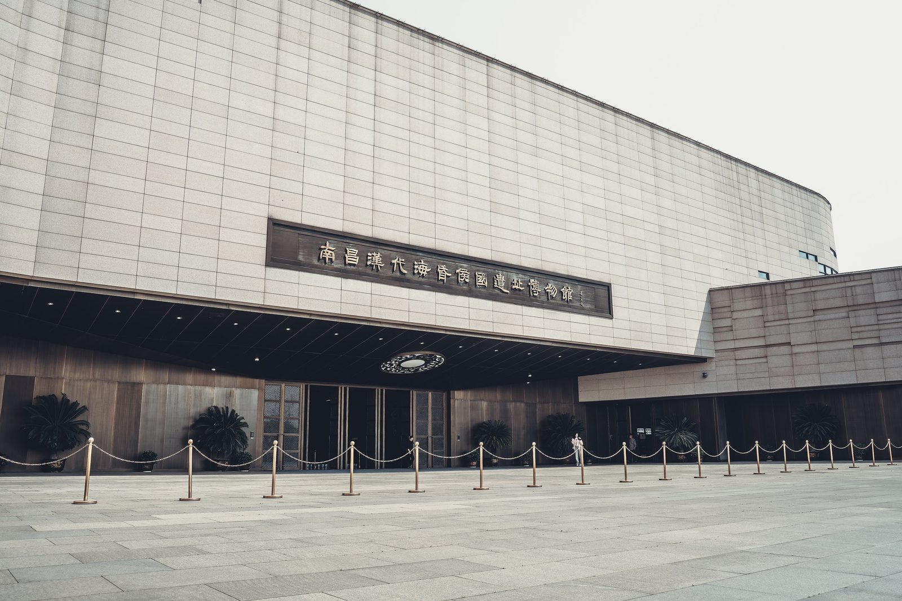
新建区（大塘坪乡）新建区（大塘坪乡）第 3 天 · 已安排
南昌汉代海昏侯国遗址博物馆
建议停留 165 分钟
依托西汉废帝、第一代海昏侯刘贺之墓建设的考古遗址公园，2020 年 9 月开放：出土金器 480 件（总重逾 120 公斤）、五铢钱 200 余万枚、竹简 5000 余枚（含《论语》佚篇），是近年中国最重要的汉代考古发现之一。“金色海昏”“丹漆海昏”等常设展厅与墎墩苑刘贺墓园原址都值得细看；园内点位分散，含观光车的套票更省力（“书香海昏”展厅自 2025 年 11 月起暂停、以官方公众号为准）。
开放每天 9:00—17:00（游客中心 16:00 停止售检票）· 全价 60 元（含观光车 75 元）· 需实名预约购票
高德地图 ↗官网 / 来源 ↗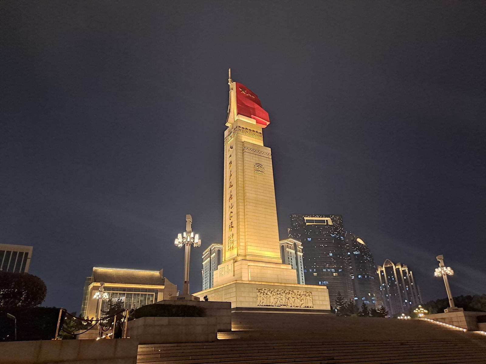
东湖区（八一大道）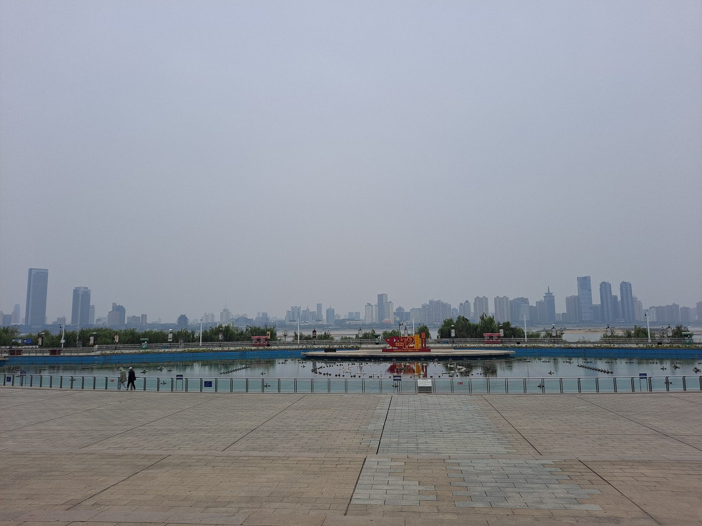
红谷滩区（赣江中大道）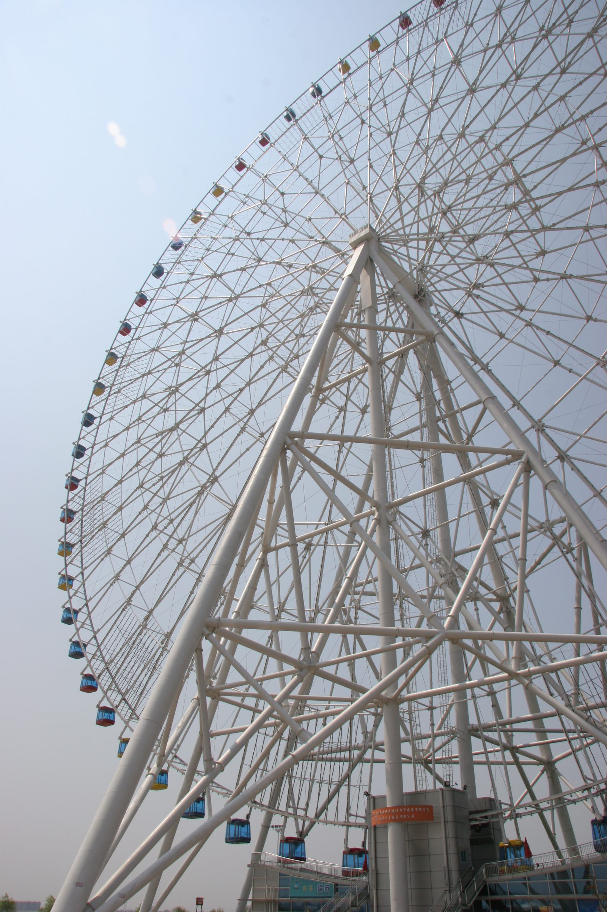
红谷滩区（红角洲）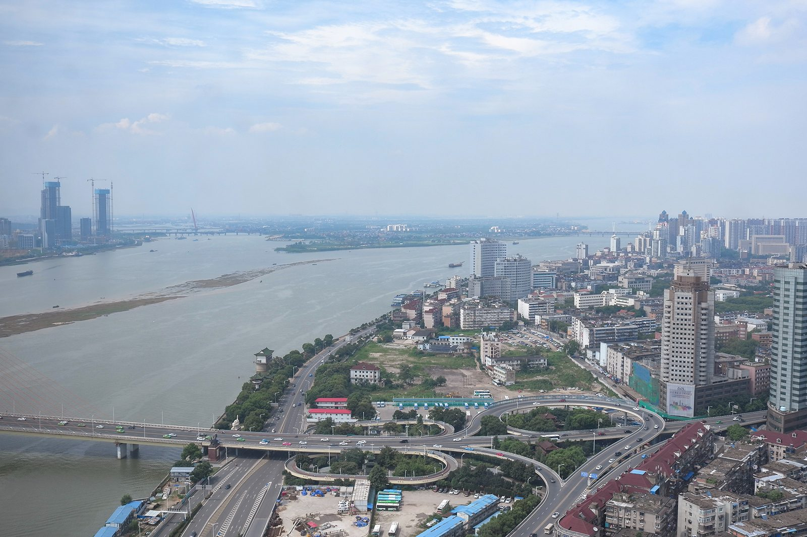
东湖区（滕王阁码头）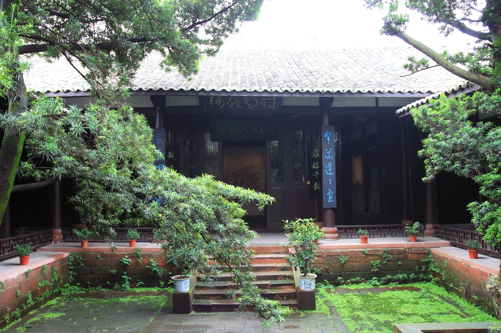
青云谱区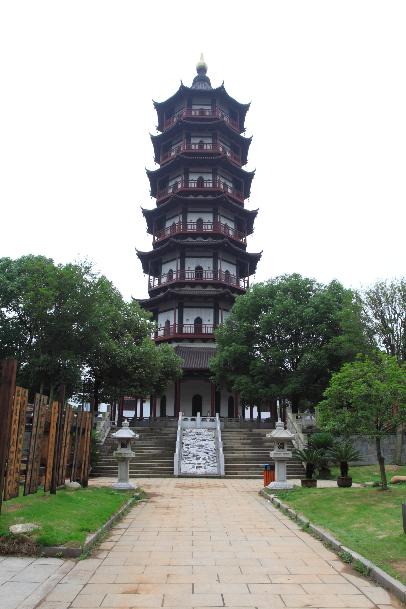
西湖区（绳金塔街）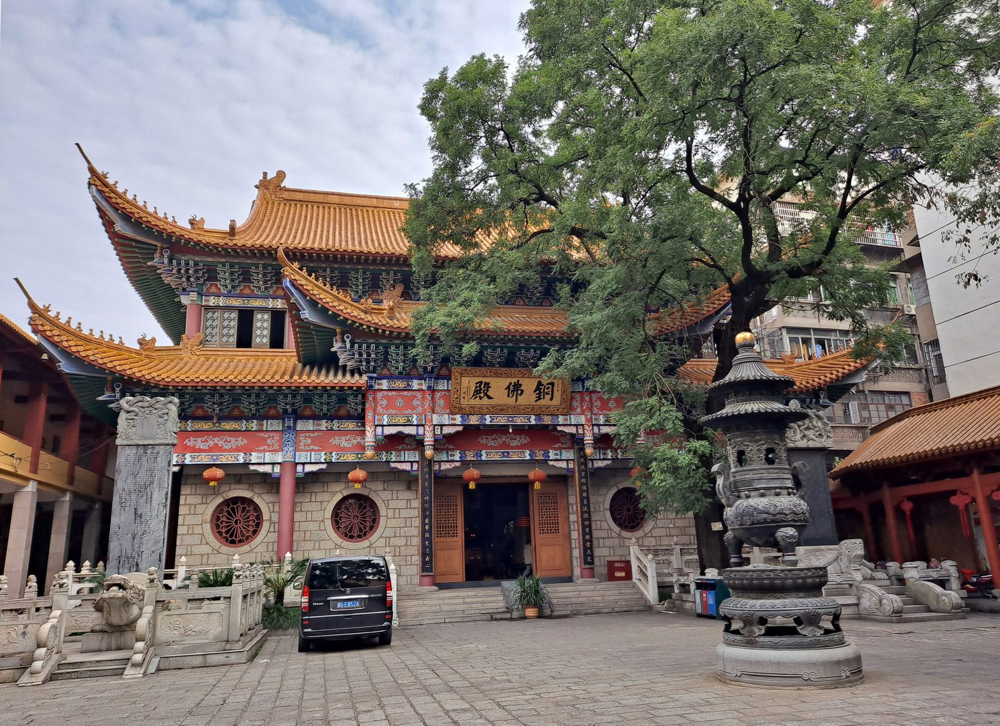
东湖区（民德路）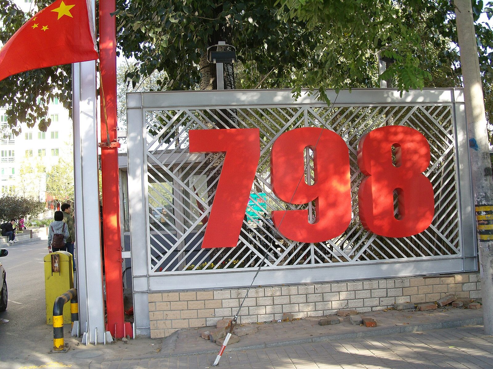
青山湖区（上海路）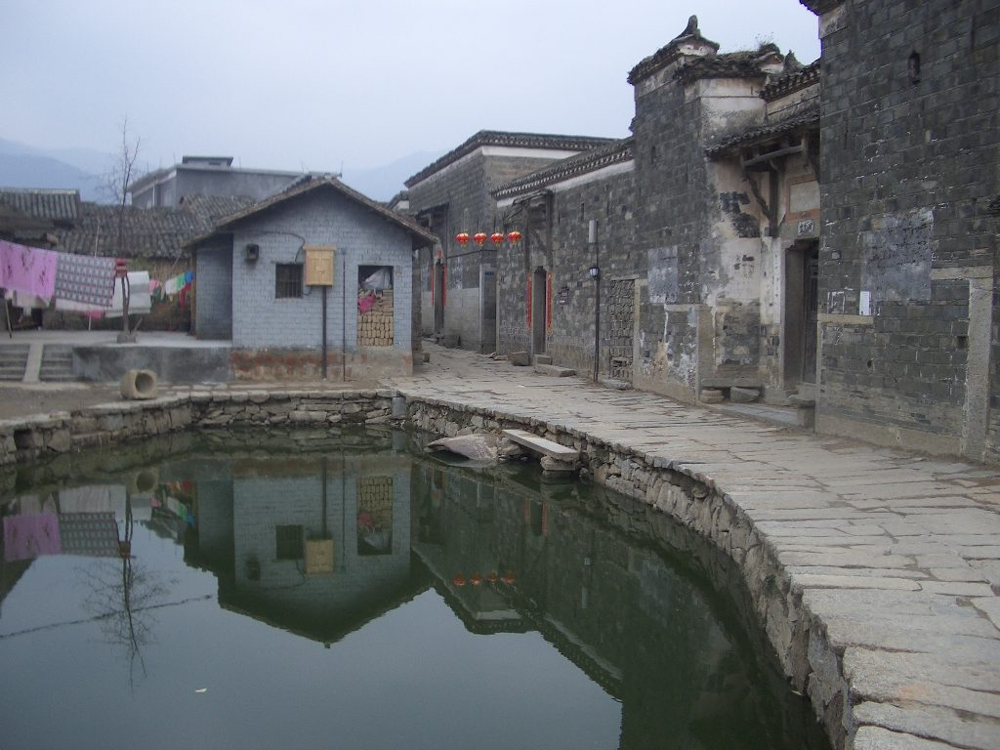
安义县（石鼻镇）03
SHOPPING
购物与当地好物
商圈与购物中心老城与新城商业＋
西湖区（地铁 1 号线万寿宫站，出口即达） · 历史街区+文创+夜市
万寿宫历史文化街区
已排入行程白天看赣派建筑、逛文创店，夜晚灯笼亮起、夜市出摊——2025 年全年接待游客 2906 万人次、销售额同比 +21%，是南昌的“城市会客厅”。街区里集中汉服体验店与特色小店，与八一起义纪念馆、中山路步行街步行可达。
值得逛 / 买方言主题杯子与冰箱贴、绳金塔剪影挂件、傩戏脸谱笔记本、汉服妆造体验
晚间客流最大，可从翠花街一侧的小巷错峰穿行；热门小吃先取号再逛。开放：街区全天开放；店铺约 10:00—22:00 · 免费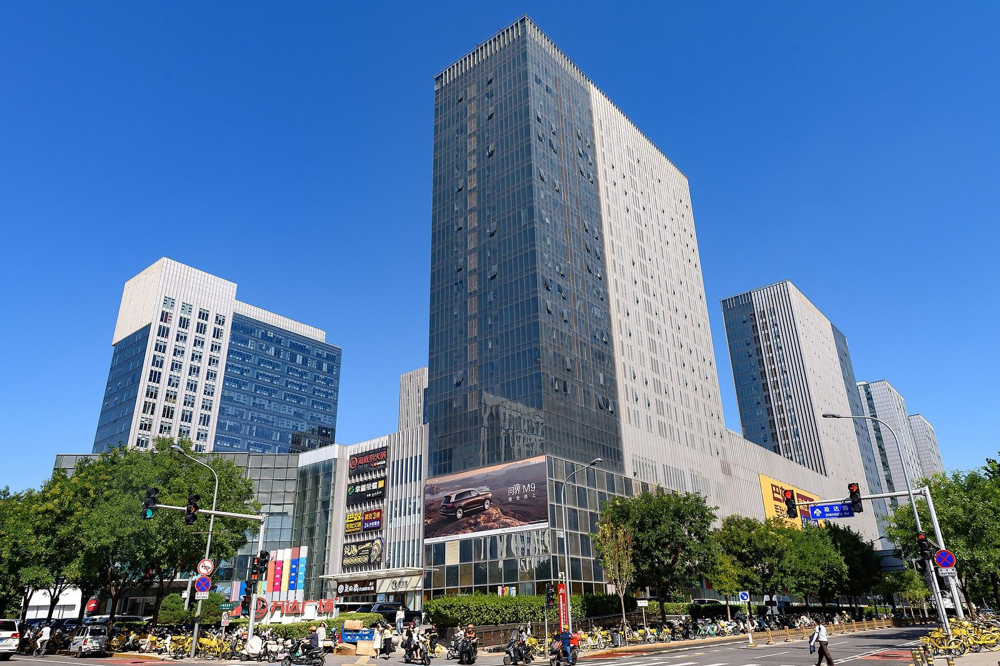
东湖区（地铁 1/2 号线八一广场站）东湖区（地铁 1/2 号线八一广场站） · 购物中心/商圈
八一广场商圈（武商MALL / 银泰）
可选老城第一商圈的两级定位：武商MALL·南昌是江西首座重奢商场（LV、GUCCI、Cartier 等首店云集），2025 年销售额 21.9 亿元、同比 +46%；银泰百货八一广场店（原南昌百货大楼）主打潮玩二次元，2025 年起“次元中心 1 号”分阶段开业。买大牌去武商、买谷子潮玩去银泰，看完省美术馆过个马路就到。
值得逛 / 买国际美妆名品、户外运动首店；二次元谷子店、手办与卡牌（银泰）
银泰为改造项目、分期开放，出发前查商场公众号确认开放楼层。开放：约 10:00—22:00（以各商场公示为准）红谷滩区（地铁 1 号线地铁大厦站一带） · 购物中心集群
红谷滩商圈（万达 / T16 / 谷得谷）
可选新城的商业主力：地铁大厦站出站即达的天虹“谷得谷·次元街区”（2024 年 7 月开街，27 家谷子店、11 家江西首进品牌）是江西首个二次元综合街区；凤凰洲的 T16 购物中心主打轻奢与首店经济；万象天地与地铁更新天地“热带雨林+商圈”场景适合逛街打卡。看完秋水广场喷泉顺路就能逛。
值得逛 / 买轻奢珠宝美妆首店、谷子手办与 COS 相关、特色小店与手作摊位
核心段地铁直达、地下通道无缝串联；逛完可从秋水广场直接回江边看夜景。开放：约 10:00—22:00（以各商场公示为准）街区与文创越逛越有味＋
西湖区（地铁 3/4 号线绳金塔站） · 美食+夜娱街区
绳金塔历史文化街区（含 G11 美食街）
已排入行程老城南线正在强势回升的“美食+夜娱”街区：2025 年前 10 个月客流同比 +84%、营收 +63%，做“四季主题庙会”（新春祈福、夏日夜市、金秋营地、年货市集）。塔下逛千佛寺、文庙与隆兴戏台，街区里吃小吃、听 Livehouse；老字号品香斋的国风包装蛋黄麻花适合顺手带上一盒。
值得逛 / 买夜市小吃、品香斋国风糕点、G11 美食街品牌餐饮、響 Livehouse
以吃为主、买为辅；土特产只建议买即食类，伴手礼另有更合适的地方（见下方手信区）。开放：街区全天开放；店铺约 10:00—22:00 · 免费东湖区/西湖区（地铁 1 号线万寿宫站—八一馆站沿中山路） · 百年商街（改造复兴中）
中山路 · 胜利路步行街
可选南昌最老牌的商业街轴线：中山路连接万寿宫街区与大士院，适合“逛街+小吃”半日；胜利路步行街是百年老街、曾经的商业王者，目前仍在改造复兴期（2025 年起做“宋风市井集市+非遗集市”，地下商业街空置率较高）。定位：顺路逛、吃老字号可以，不建议专程为购物而来。
值得逛 / 买沿街老字号小吃、国风糕点、非遗集市摊位、真真照相馆（1920 主题老照相馆）
与万寿宫行程串成一条散步线即可，不必单独排时间。开放：沿街店铺时间各异（约 10:00—21:00）青山湖区（上海路 699 号，建议打车） · 文创园（工业遗存改造）
699 文化创意园
可选1950 年代江西华安针织总厂厂房改造的文创园：红砖车间、涂鸦墙与小剧场混搭，获“省级高品质夜间经济街区”称号；园内 B19 Livehouse 周末常有演出，市集摊位适合淘独立设计小物、看展览、喝咖啡，是南昌“工业风”打卡与夜生活的代表。
值得逛 / 买独立设计饰品与皮具、手作工坊、市集摊位、演出门票（票务平台购买）
无地铁直达、建议公交/打车；夜间演出以票面时间为准。开放：园区全天开放；店铺/演出以现场及票面时间为准 · 免费伴手礼与值得带走的东西5 项可比较＋
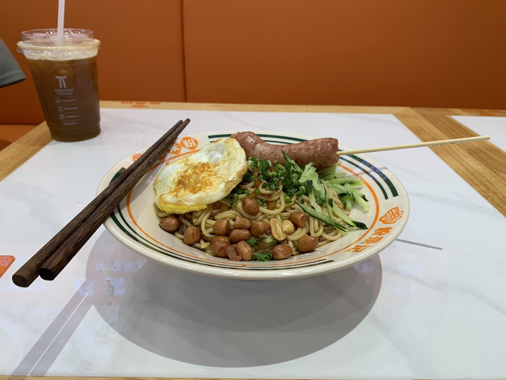
食品伴手礼（预包装）
南昌米粉 / 拌粉速食礼盒
把“过早”的灵魂装进盒子：干米粉包与酱料包分开封装，回家煮泡几分钟就是一碗南昌拌粉。市面常见品牌有周真真（南昌线下粉面连锁的礼盒装）、宜人家（约 1212g 装）、渣渣灰（8 盒装，电商爆款）；单价低、分量轻、不怕压，是辨识度最高的南昌味道。
为什么值得买南昌人一天从一碗拌粉开始——便宜、好带、有故事，是“人手一盒”的稳妥选择。
适合送给同事、同学与爱嗦粉的朋友（有微辣/中辣口味，送人前确认吃辣程度）。
哪里买：周真真等连锁门店、大型超市特产区、高铁站与机场特产店，或电商品牌旗舰店。常温保存、看保质期（一般 6—12 个月）；干粉托运随身都无压力。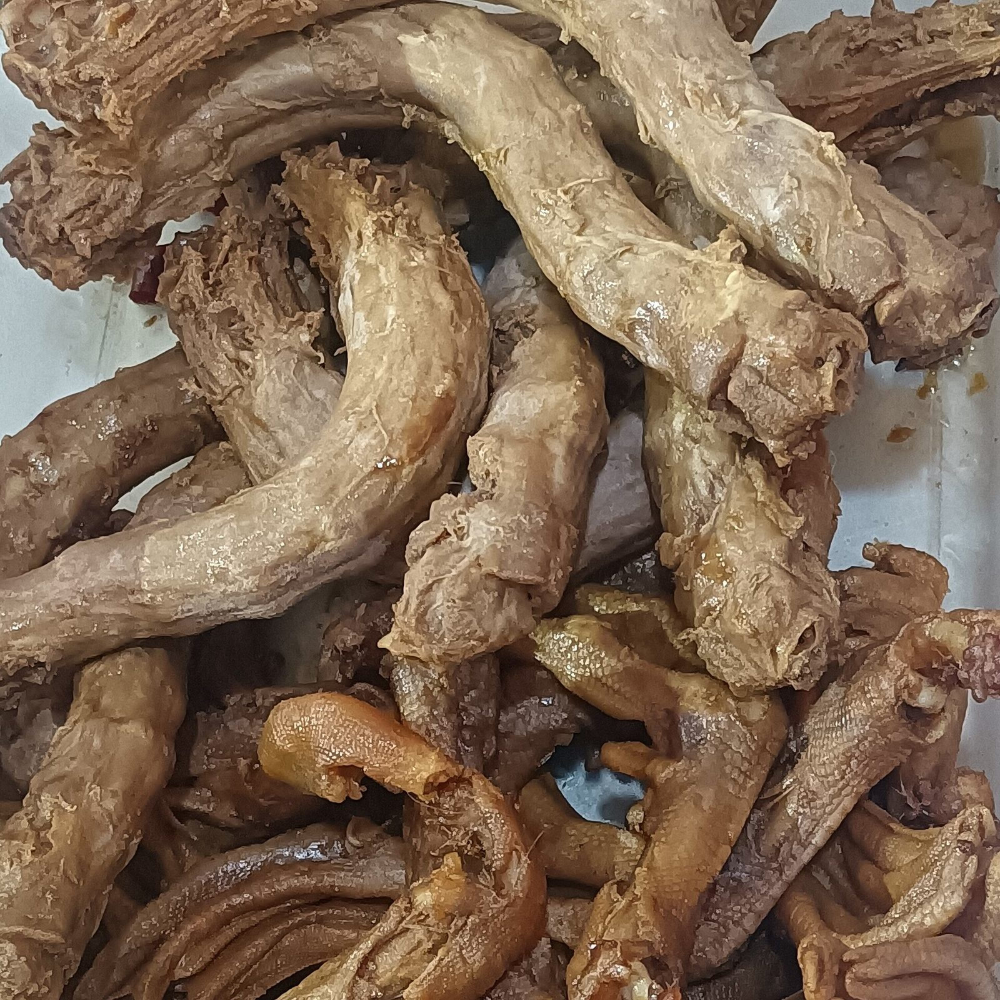
食品伴手礼（真空熟食）
煌上煌酱鸭（真空装）
1993 年创立于南昌的卤味上市公司：酱鸭先卤后酱、有麻辣与微辣多口味，真空装可常温携带；2024 年还把全国首批概念门店开进了万寿宫街区。整鸭约 40—80 元、手撕装约 30 元级，是最国民级的江西手信。
为什么值得买南昌人从小吃到大的卤味品牌；真空装解决了“好吃带不走”的问题。
适合送给长辈、同事与饭搭子都合适；送人建议选微辣或清香。
哪里买：南昌街边门店随处可遇（让店员真空打包）；昌北机场与南昌西站也有门店。认准真空包装与生产日期；开封后冷藏尽快吃完；辣度分档，送人别选错。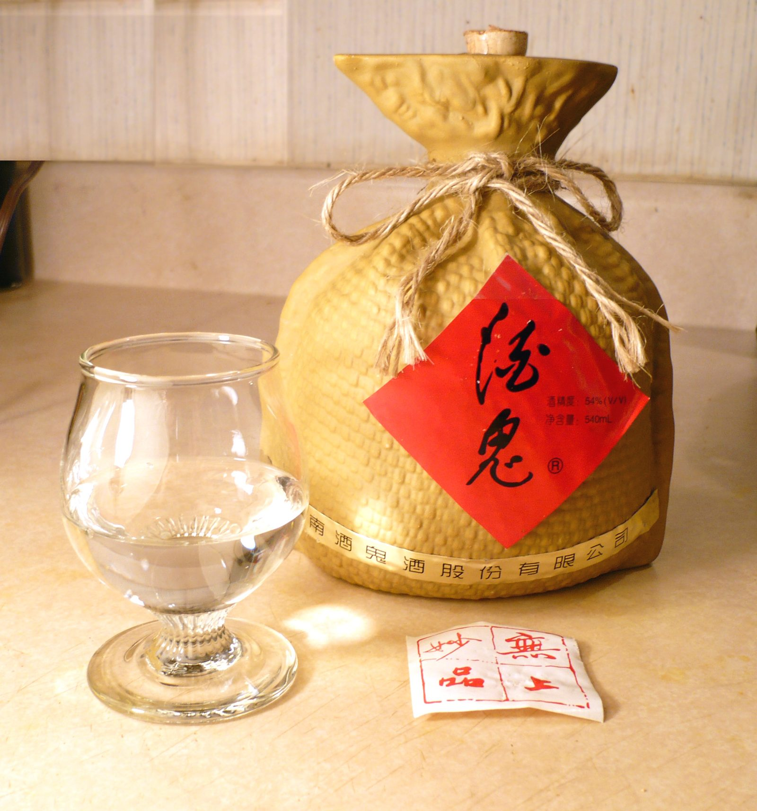
酒类伴手礼
李渡高粱酒（江西名酒）
产自南昌进贤县李渡镇（元代窖池群、全国重点文保“李渡元代烧酒作坊遗址”）的高端白酒，以“最贵光瓶酒”闻名：数字系列 1975 约 500+ 元、1955 约 850—1088 元、1308 约 1499 元档。产地就在南昌辖内，是“从南昌带走的酒”里故事最完整的一瓶。
为什么值得买江西最具话题度的高端白酒，产地遗址可参观，送酒友有得聊。
适合送给酒友、长辈与商务场合（预算有限选 1975 档）。
哪里买：市区李渡酒专卖店、华致酒行体系、大型商超酒水区与京东自营旗舰店。火车限量携带（酒精 24%—70%、累计不超过 3000ml）；飞机必须托运（不超过 5L）、保留原盒与发票。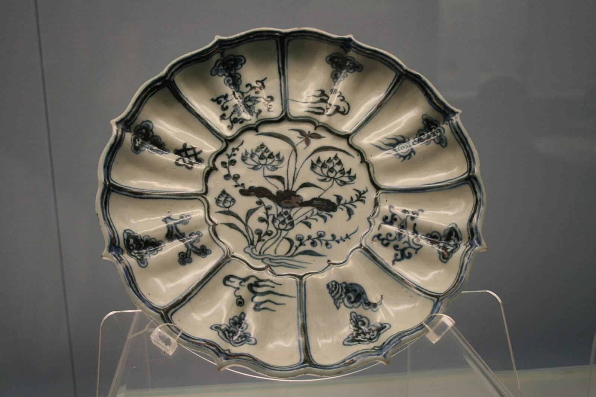
非遗手工艺
南昌瓷板画
在瓷板上手绘、上釉再高温烧制的传统工艺：可溯至秦汉、成于明代中期，南昌瓷板画 2008 年入选国家级非物质文化遗产。不怕潮湿、不怕霉变，色彩可保持数十年鲜艳，是“能传家的南昌礼物”；从百元级文创小件到大师原作都有。
为什么值得买非遗工艺加结实耐放，中国味十足；比纸画更适合长期陈设。
适合送给讲究的长辈、乔迁新居、外地或外国朋友。
哪里买：八大山人梅湖景区纪念馆文创、南昌瓷板画艺术博物馆（免费场馆）、万寿宫街区文创店。瓷板怕摔不怕潮：让店家做气泡膜+硬盒包装，随身登机比托运稳；高价值原作索要作者/机构证书。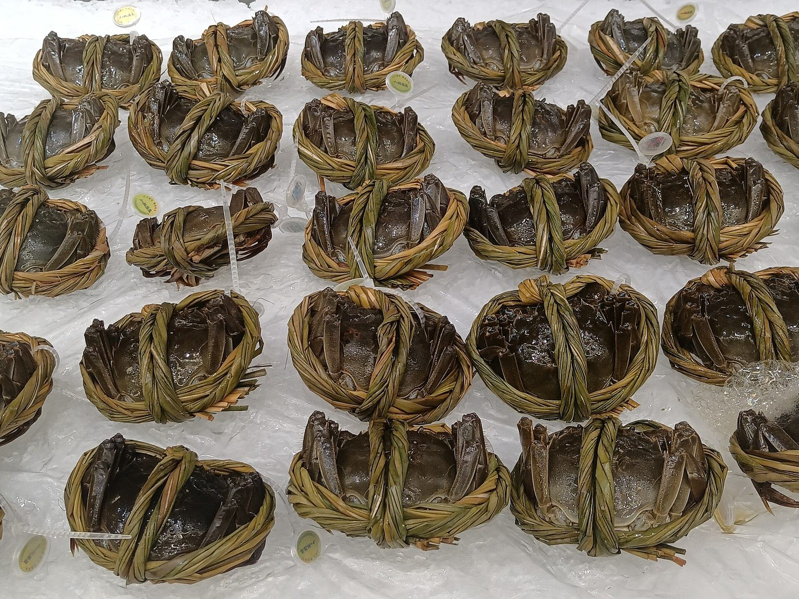
时令生鲜
军山湖大闸蟹（秋季限定）
南昌进贤县军山湖是本地最大的大闸蟹产区：2026 年投放约 580 万斤“金蟹”、9 月下旬首捕、10 月正当黄金档，清水中长大的蟹“大、肥、腥、鲜、甜”。带不走活蟹的旅客可选鄱阳湖银鱼干等干货替代；最省心的是让蟹庄直接快递到家。
为什么值得买10 月来南昌正撞上蟹季；本地蟹庄可现挑现蒸，比在城里吃更划算。
适合送给送给会自己蒸蟹的亲友；蟹庄或网店直发目的地城市最省事。
哪里买：进贤军山湖沿线蟹庄与码头、市区商超蟹档，或电商“军山湖大闸蟹”官方旗舰店。火车可带（双层箱+冰袋、防渗漏，以车站安检为准）；飞机只能托运；死蟹勿食。04
LOCAL EXPERIENCES
试试真正属于当地的体验
城市夜景体验展开 ＋
文化与生活展开 ＋
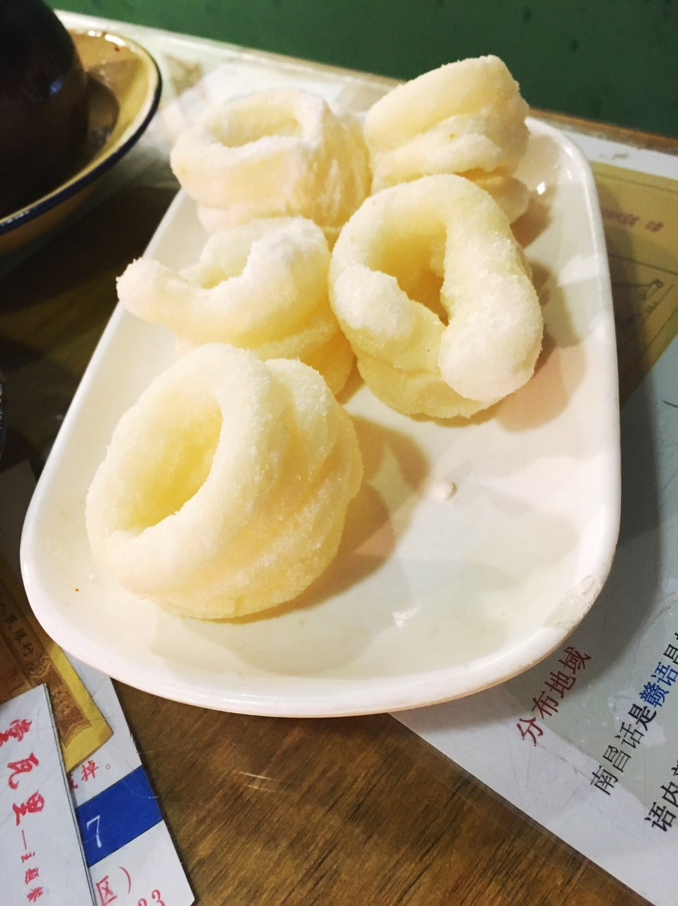
东湖区（大士院老街）街区与户外展开 ＋
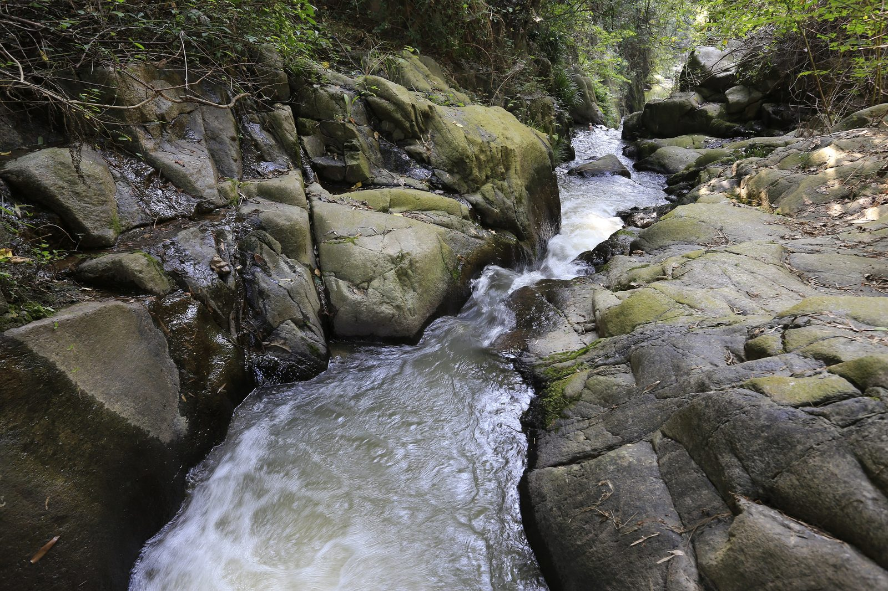
青山湖区 / 高新区（艾溪湖—瑶湖）05
FOOD GUIDE
餐饮指南
当地小吃推荐＋
南昌拌粉
Nanchang Banfen南昌人一天从一碗粉开始：江西米粉爽滑筋道，盐、花生米、萝卜丁、酸豆角、葱花与特制辣椒酱汁一拌——“少了辣椒，味道要打不少折扣”。街边老店 4—8 元一碗，40 多年的老店至今守着老配方；浇头从牛腩到“全频道”丰俭由人。
- 为什么要试
- 人民日报都写过的南昌符号：便宜、日常、上头，是理解这座城的第一个味觉坐标。
- 哪里找
- 秦胖子肉陀（石头街）、老三院粉店（慧园街）、小罗子汤店（大士院）；连锁选万方圆。
瓦罐汤
Nanchang Clay-Pot Soup大瓦罐里整齐码放的小瓦罐是南昌街头一景：炭火慢煨半夜，肉饼汤、皮蛋肉饼汤、枸杞乌鸡汤……“店店不同，至少上百个品种”，5 元起步。先喝一口原汤再舀肉饼，配一碗拌粉就是本地人默认的正餐。
- 为什么要试
- 南昌独有的煨汤文化：把“慢”装进小罐子里，和拌粉并称早餐“灵魂 CP”。
- 哪里找
- 龙老五汤店（站前西路）、小罗子（大士院）、黄记瓦罐煨汤（连锁多店）。
白糖糕
Nanchang White Sugar Cake起源明清、民国时期茶铺常备的“江西五大传统名点”之一：糯米粉舂制、整形成环、油炸后滚绵白糖，外酥里糯、甜而不腻。大士院“老南昌白糖糕”1 元 1 个多年没涨价，小铺只有两三平米，排队高峰在周末上午。
- 为什么要试
- 南昌甜味小吃的头号名片：1 块钱就能买到的老味道。
- 哪里找
- 大士院半步街交叉口老铺；味福记等小吃集合店也有常备款。
糊羹（福羹）
Nanchang Hugeng (Fu Geng)南昌年节传统小吃：猪肝、笋丁、木耳等十几种食材勾芡熬成，浓稠顺滑、咸鲜暖胃，取“福气迎门”的谐音叫“福羹”。过去春节元宵才吃得到，现在味福记等店全年供应，是尝鲜这道传统味最稳妥的去处。
- 为什么要试
- “糊羹就是福羹”——一碗浓稠里藏着南昌人过年的仪式感。
- 哪里找
- 味福记（多店，福羹为常备小吃）；大士院早市冬春偶有摊点。
值得专程去＋
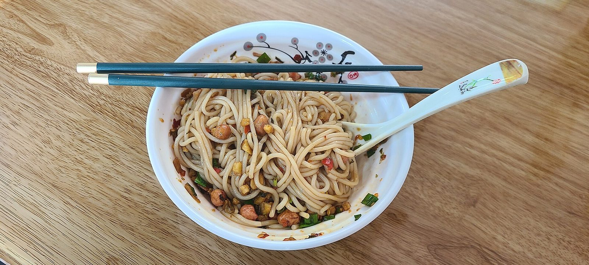
西湖区 · 石头街 105 号（近船山路、万寿宫觅食圈）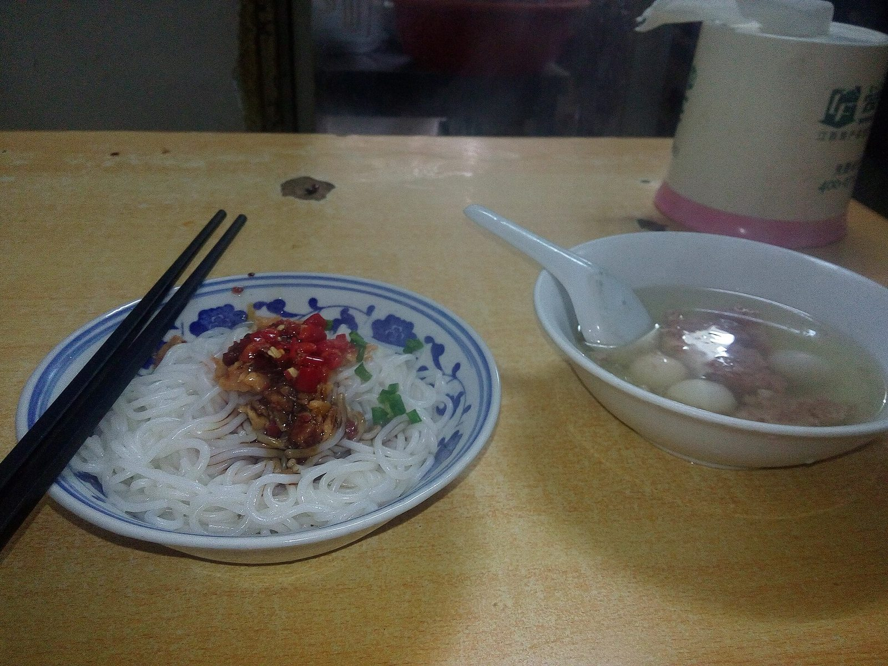
东湖区 · 大士院街（近滕王阁、万寿宫）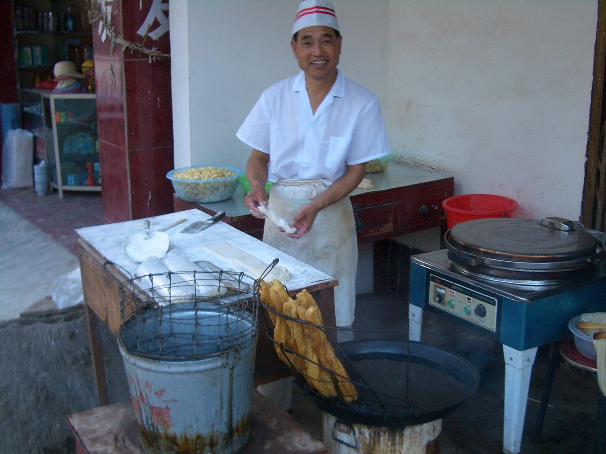
西湖区 · 慧园街 1 号（第三医院后门一带居民楼下）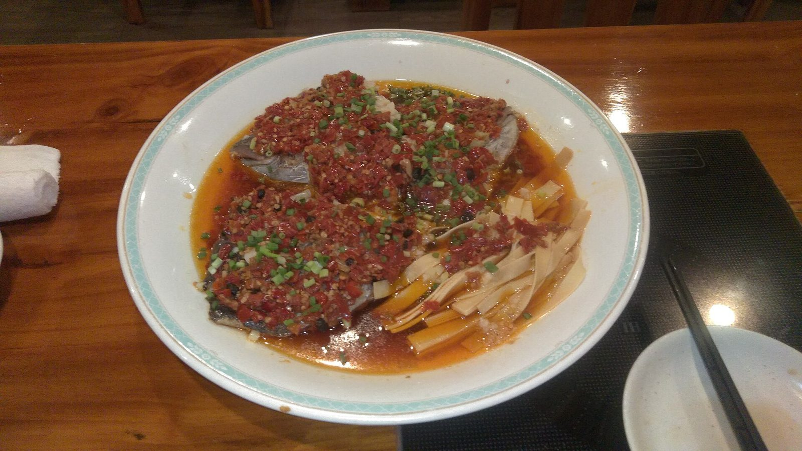
红谷滩区 · 赣江新天地 1 号楼（红角洲）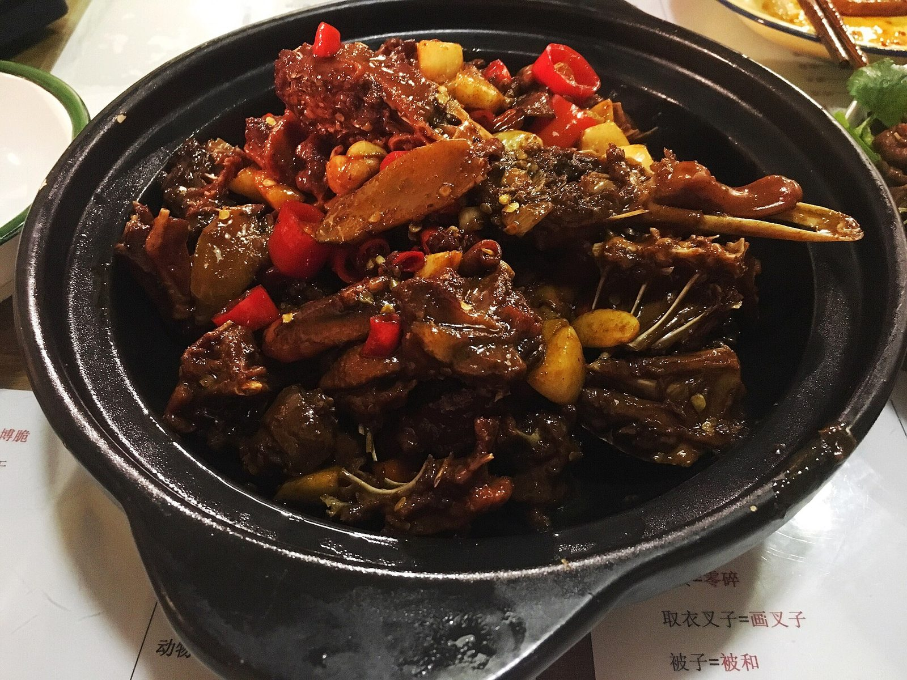
红谷滩区 · 丽景路 95 号（近秋水广场）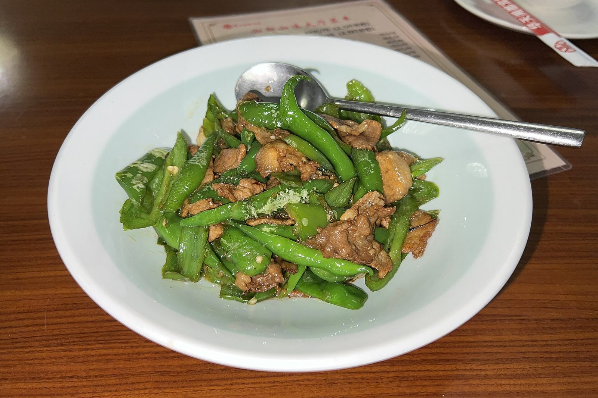
东湖区 · 蛤蟆街（豫章后街）街区打平伙·鲜辣小炒（蛤蟆街店）Dapinghuo Fresh-Spicy Stir-Fry
赣菜·鲜辣小炒（本土网红） · 东湖区 · 蛤蟆街（豫章后街）街区
招牌：蟹脚捞粉 · 绝味牛蛙 · 烧大鸡脚 · 井冈山烟笋 · 南昌白糖糕
第 1 天 · 已安排
为什么值得去南昌新闻网“辣味经济”报道里的样本店：坚持现炒，菜单做辣度分级“微辣 / 南昌辣 / 绝杀辣”——“外地游客选微辣的较多，但复购率最高、最能体现特色的恰是南昌辣”。品牌名取自江西话“打平伙”（凑份子吃饭），开在蛤蟆街夜宵核心区，一顿饭同时吃到网红赣菜与街头氛围。
营业午市晚市（夜宵时段最热闹；以门店公示为准）
人均约 60—80 元 / 人距离与开放时间以出发前复核为准
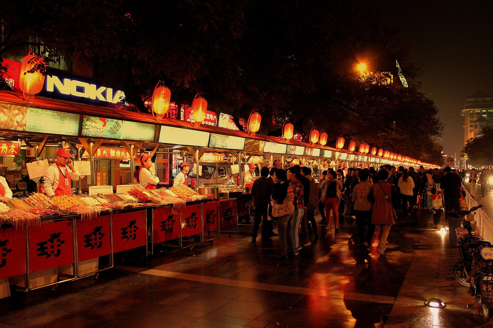
西湖区 · 万寿宫历史文化街区一带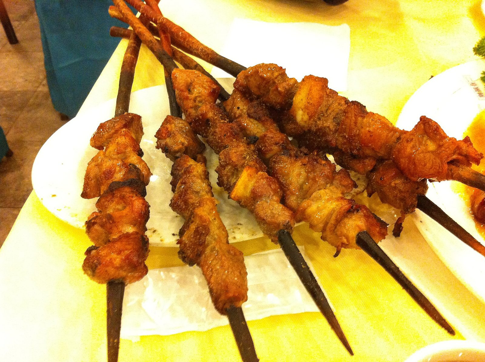
西湖区 · 会堂东路 45 号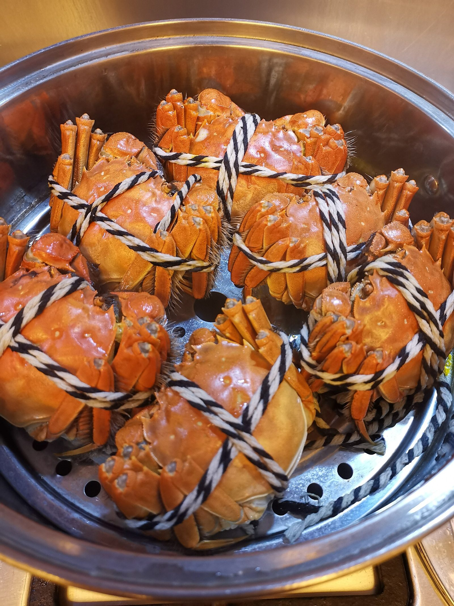
进贤县 · 军山湖（距市区约 1 小时车程）军山湖吃蟹（进贤蟹庄）Junshan Lake Crab Restaurants
大闸蟹·湖鲜（蟹季限定） · 进贤县 · 军山湖（距市区约 1 小时车程）
招牌：军山湖清水大闸蟹 · 现捞现蒸湖鲜
可选（专程）
为什么值得去10 月来南昌正撞上蟹季：军山湖大闸蟹是进贤招牌、国家地理标志产品，“大、肥、腥、鲜、甜”；湖边三阳集乡的蟹庄可现场打捞现蒸、按两计价，市区也有品牌直营店与电商旗舰店。想“为一顿饭跑一趟”就自驾湖边走；只想尝鲜，市区商超蟹档与直营门店即可。
营业蟹庄约 7:00—23:00（以当日为准；点单先问价）
蟹庄人均约 100—160 元 / 人距离与开放时间以出发前复核为准
本地连锁安心选＋
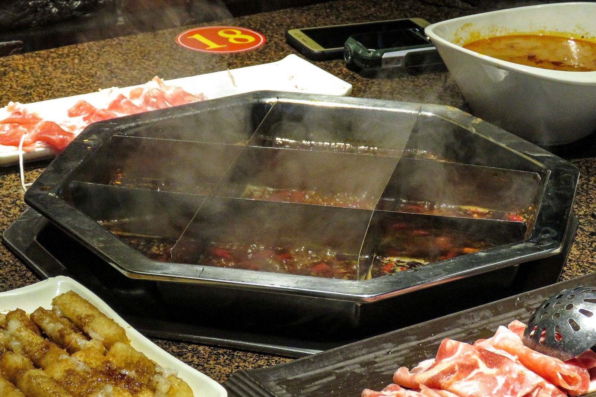
南昌多店 · 万寿宫店、中山路店等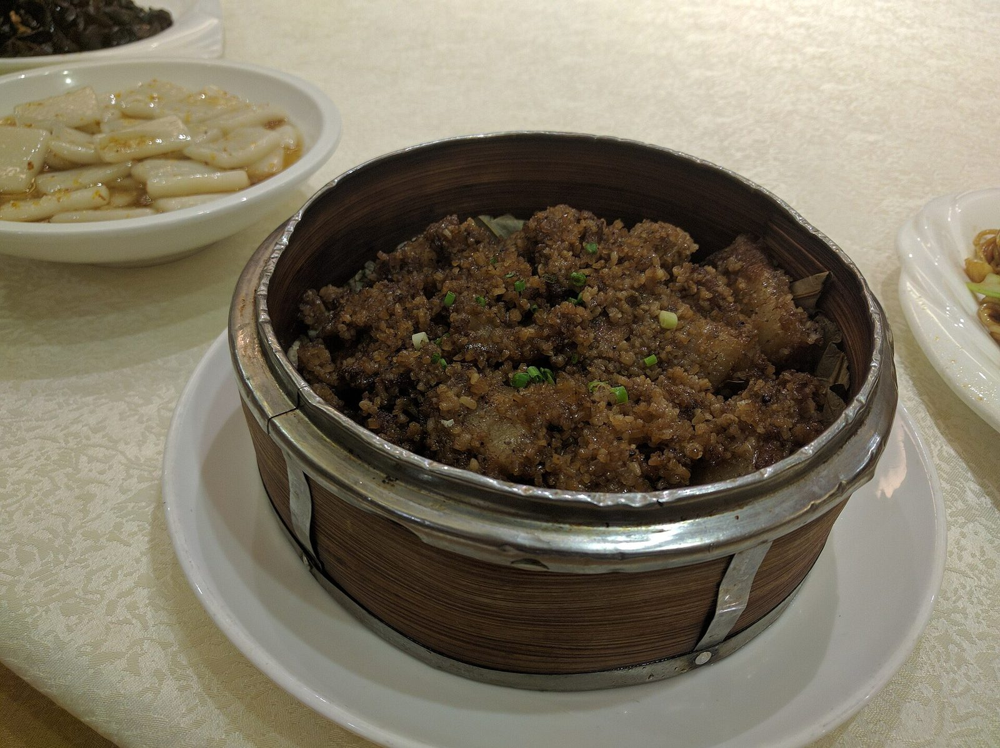
南昌多店 + 全国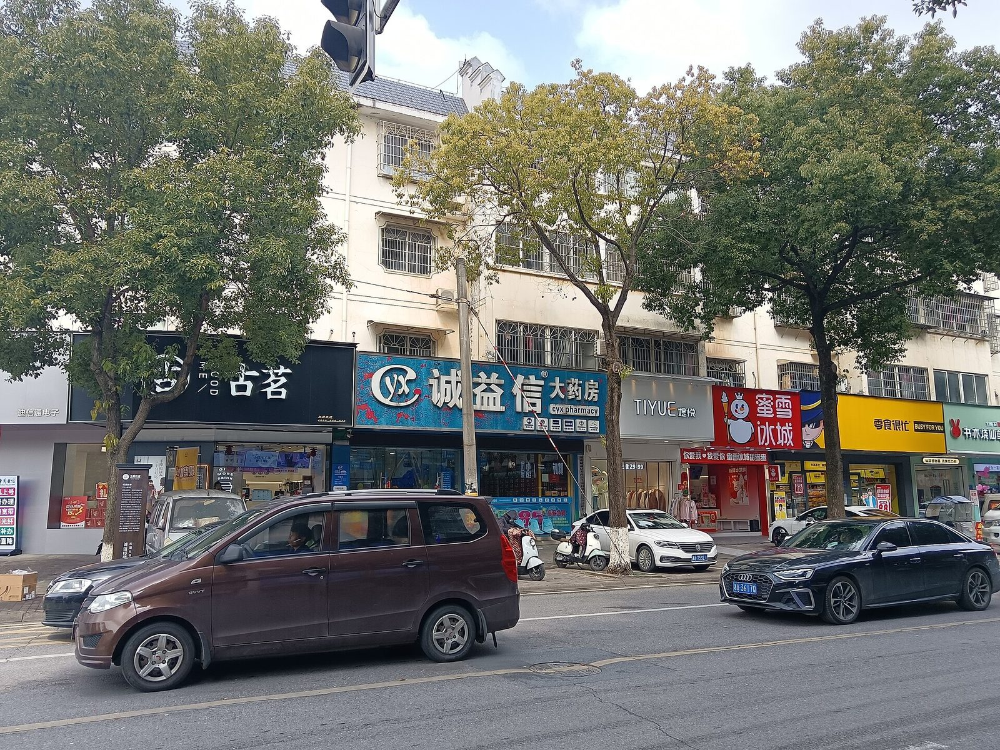
南昌多店 · 八一广场店、购物中心内等07
LANGUAGE COMPANION
语言随行锦囊
普通话走全城，听懂几句南昌话
地名与片区
5 词＋
滕王阁东湖区赣江畔，“江南三大名楼”之首；地铁 1 号线滕王阁站步行约 800 米。
老城（东湖·西湖区）八一广场、万寿宫、大士院、绳金塔都在这片——南昌的行程基本围着一环以内转。
红谷滩赣江西岸的新城：秋水广场、摩天轮、江西省博物馆与红谷滩商圈都在这里。
大士院老城东北的早餐圣地：拌粉、瓦罐汤、白糖糕一条街，7 点前后最全。
蛤蟆街（豫章后街）老城夜宵核心区，网红赣菜与夜排档的聚集地，晚上九点后才真正热闹。
交通与出行
5 词＋
南昌西站高铁主力站（地铁 2 号线）；老城方向的南昌站在同一条线上，购票记得看清站名。
地铁 1 号线串起机场—八一广场—万寿宫—滕王阁—秋水广场，游客最常用的一条线。
扫码乘车支付宝 / 微信开通南昌地铁乘车码即扫即乘；进出站用同一个 App 的码。
滕王阁游轮码头赣江夜游的登船点，在滕王阁景区一侧；提前 30 分钟候船。
海昏侯直通车滕王阁南门往返遗址公园的班车（约 30 元、单程约 60 分钟），时刻以公众号为准。
粉店与点单
5 词＋
拌粉南昌早餐的绝对主角：米粉烫熟加辣椒酱汁一拌，默认偏辣，点单时可以“少辣”。
瓦罐汤小瓦罐炭火慢煨的炖汤：肉饼汤、皮蛋肉饼汤、乌鸡汤……配拌粉是本地标配。
辣度分级夜市小炒普遍分“微辣 / 南昌辣 / 绝杀辣”——外地游客先微辣最稳，想体验就上“南昌辣”。
少辣 · 加辣点单时的两句口头禅：拌粉默认辣，不能吃辣就说“少辣”；想加码就加“南昌辣”。
全频道拌粉浇头“全都要”的南昌说法：牛肚、牛肉、猪耳朵、藕片一样不少。
购物与手信
5 词＋
煌上煌酱鸭南昌卤味第一品牌（1993 年创立）：真空装可带走，整鸭约 40—80 元。
真空装卤味熟食的“可携带版本”：认准真空包装与生产日期，开封后冷藏尽快吃完。
南昌米粉礼盒干米粉 + 酱料包的预包装组合：轻便不怕压，保质期一般 6—12 个月。
瓷板画国家级非遗手工艺：在瓷板上作画烧制，不怕潮、色彩耐久，是“能传家”的南昌礼物。
军山湖大闸蟹进贤县的地理标志蟹：九月下旬首捕、十月最肥，蟹庄现挑现蒸或快递到家。
南昌话彩蛋（赣语小注）
5 词＋
老表江西人之间的亲切称呼（表亲之意），答一句“江西老表”最地道。
恰饭（呷饭）“恰”=吃：南昌话里吃粉喝汤都用一个“恰”，约饭会问“恰饭冇？”。
恰噶很棒、厉害——“好恰噶！”是本地化的赞叹，方言文创的顶流元素。
冇没有、没：常听到“冇得”“冇来”，点单时老板说“冇了”就是卖完了。
几多钱？“几多”=多少：逛摊问价的一句万能听力，“几多钱”本地人秒懂。
HIGH-FREQUENCY PHRASES
现场高频句
01问路与乘车5 句＋
01
师傅，去滕王阁坐几路车？地铁 1 号线一线串起滕王阁—万寿宫—八一馆—八一广场，问路直接报站名最高效。
02
到万寿宫站走过去远不远？老城核心几个点步行可串联，本地人多半答“一个站”“走路十来分钟”。
03
去南昌西站是坐 2 号线吗？高铁多在南昌西站；南昌站（老城方向）同样在 2 号线上，购票看清“出发站”。
04
海昏侯的直通车在哪上车？直通车在滕王阁南门一带发车（往返约 30 元），上车点以现场和官方公众号为准。
05
扫码乘车用哪个码？地铁进出站扫码即乘，进出用同一个 App 的乘车码，中途别切换。
02点单与辣度5 句＋
01
一碗拌粉、一盅瓦罐汤，微辣。早餐标配句式：“恰”在南昌话里就是“吃”；先说辣度最省事。
02
老板，少辣 / 南昌辣？夜市小炒分“微辣 / 南昌辣 / 绝杀辣”；外地游客先点微辣最稳，想体验特色再上“南昌辣”。
03
来一份全频道！“全频道”=浇头全都要：牛肚、牛肉、猪耳朵、藕片一样不少，名字本身就很南昌。
04
水煮几多钱一串？“几多”=多少（南昌话）；水煮、油炸按串计价，先问价再抓串更从容。
05
买单，可以扫码吗？南昌小馆子基本都支持扫码；结账前看一眼明细即可。
03逛馆与登阁5 句＋
01
登阁要预约吗？现场能买票吗？官方公众号可提前预约（全价 50 元、市民 25 元）；背诵《滕王阁序》免票活动以景区公告为准。
02
今天几点清场？日游 8:00—18:00、17:30 停止入园、18:15 清场；夜场演出与登阁时段分开，别赶末班。
03
馆里可以拍照吗？博物馆、纪念馆基本允许拍照但禁用闪光灯；佑民寺殿内请勿拍摄佛像。
04
喷泉今晚几点开？秋水广场 19:30 / 20:30 两场（夏秋口径）；雷雨大风停喷，看“南昌发布”的通告最准。
05
可以帮我拍张照吗？江边与阁楼回廊都是热门机位；拍人像前先跟对方打个招呼更礼貌。
04购物与手信5 句＋
01
这只酱鸭能真空打包吗？煌上煌等卤味店可以真空包装；整鸭约 40—80 元，送人记得先问辣度。
02
米粉礼盒保质期多久？常温一般 6—12 个月；轻便不怕压，是最容易带走的南昌味道。
03
瓷板画能带上飞机吗？怕摔不怕潮：让店家做气泡膜 + 硬盒，随身登机比托运稳，高价值原作索要证书。
04
多买两盒有优惠吗？超市特产区与门店集中采购常有组合价；景区文创小店讲价空间有限。
05
可以开个发票吗？正规门店与商场收银台均可开票；保留小票方便退换与报销。
05求助与紧急情况5 句＋
01
我不太舒服，哪里有药店？连日重辣 + 夜宵容易肠胃不适；紧急情况打 120，常用药出发前就备好。
02
手机不见了，可以帮忙报警吗？报警电话 110；万寿宫街区、蛤蟆街人流密集处背包前背、手机不插外侧口袋。
03
下雨了，附近有室内的地方吗？江西省博物馆、省美术馆、八一起义纪念馆都是免费避雨 + 看展的好去处。
04
走散了在哪里集合？万寿宫牌坊、八一广场纪念塔都是显眼地标，提前约定集合点最可靠。
05
可以帮我打个电话给酒店吗？南昌区号是 0791，市内直拨；帮拨外地号码前面记得加 0。
08
LOCAL TRAVEL NOTES
到了当地，心里有数
十月的南昌天气与季节十月的南昌平均高温约 24℃、低温约 17℃；但“秋老虎”常到十月上旬才退场，中下旬才真正转凉——上旬按夏天备短袖 + 防晒，中下旬加一件薄外套。＋
气温与穿衣
十月平均高温约 24℃、平均低温约 17℃（日均约 20℃）。上旬仍可能 30℃+，按夏天备防晒与短袖；中下旬转凉加薄外套；遇冷空气过程降温可超 10℃，出发前查一周预报。
秋雨与降水
十月是南昌全年降水最少的月份之一（月均约 54 毫米、约 7—8 个雨天）：秋雨来得急，折叠伞随身；老城石板路雨后湿滑，鞋底防滑更安心。
江边与夜游的体感
赣江江面开阔，夜航甲板、秋水广场看喷泉都比市区风大：夜场加一件薄外套；秋冬转换期昼夜温差接近 8—10℃，别只看白天温度。
秋燥与补水
十月天气晴燥，室内外干湿切换容易口干：多喝温水；咸鲜香辣的赣菜配一盅瓦罐汤，肠胃更舒服。
老表们的城当地习惯与礼仪南昌人把吃早餐叫“过早”，“老表”是江西人之间亲切的称呼；辣度是本地餐桌上的“社交礼仪”，说清楚就都好办。＋
“过早”的节奏
老粉店清晨开门、卖完收档，7 点前后大士院最全；一碗拌粉一盅瓦罐汤坐下来吃掉，是理解这座城最快的方式。
辣度先报备
点菜主动说辣度（微辣 / 南昌辣 / 绝杀辣）；拌粉默认偏辣，一句“少辣”就行；怕辣可以选瓦罐汤、白糖糕、糊羹这些“安全牌”。
寺庙与纪念馆
佑民寺殿内请勿拍摄佛像、香烛随缘；八一起义纪念馆肃穆参观、轻声慢行；“老表”是亲切的称呼，不含贬义。
夜市与街区
蛤蟆街、船山路、珠宝街晚上九点后才真正热闹；“水煮配油炸”是本地铁律；万寿宫街区晚间人流大，同行先约定走散集合点。
地铁 + 直通车当地交通南昌靠“地铁 + 打车 + 直通车”三件套就够了：1 号线串起老城与红谷滩，机场也通地铁；去海昏侯认准直通车或 666 路。＋
地铁与乘车码
现有 1—4 号线：1 号线串起滕王阁—万寿宫—八一馆—八一广场—秋水广场，昌北机场也由 1 号线直达；扫码进站、进出用同一个 App 的码。
过江与跨区
老城（东湖、西湖区）与红谷滩隔赣江相望：地铁 1 号线过江最稳，打车过桥更快但晚高峰要留富余；跨区行程尽量排顺路。
去海昏侯的三种方式
①滕王阁南门直通车（往返约 30 元、单程约 60 分钟）；②打车 / 自驾约 1 小时；③阳明公园站换乘 666 路公交。返程末班提前确认。
火车站与机场
高铁多在南昌西站，老城方向的南昌站与南昌东站都能用；昌北机场乘地铁 1 号线直达市区。购票认清“南昌西 / 南昌 / 南昌东”。
江风与辣度安全提醒南昌整体治安良好，风险主要集中在水边、辣度与人流三件事上：江边不涉水、辣度量力而行、人流密集处看好随身物品。＋
赣江边的安全
夜游码头与江边步道风大湿滑：不翻越护栏、不贴水边拍照；喷泉与摩天轮遇雷雨、5 级以上大风、大雾会停开，出发前看官方通告。
吃辣的自我保护
连续重辣 + 夜宵容易肠胃不适：备肠胃药、多喝温水；大闸蟹务必吃活的、蒸透，死蟹勿食；夜宵后别马上剧烈活动。
人流与财物
八一广场（每月 1 日升旗）、万寿宫街区与节假日的大士院人流极大，地铁可能临时客流管控：背包前背、手机不插外侧口袋。
骑行与步行
艾溪湖—瑶湖绿道骑行靠右慢行、注意混行的电动车；老城石板路雨天防滑，夜走江边照明弱，结伴慢行更稳妥。
扫码与小账目支付与消费在南昌一部手机就能生活：粉店、夜市摊都能扫码；三个最常被问到的“小账目”是早市价格、按串计价与手信托运。＋
扫码支付与备用现金
微信、支付宝覆盖到粉店与夜市摊位；备 100—200 元现金应急即可，寺庙随喜与个别老摊位可能用得到。
粉店的“卖完即收”
老粉店不做全天生意，去晚了真会关门——把“过早”往前排，既便宜又地道（人均 11—24 元吃得很好）。
夜市按串计价
水煮、油炸按串算：先问单价再抓串，吃完数签结账；小炒店人均 60—80 元能吃得很饱，黑珍珠赣菜人均 150—222 元。
手信与凭证
酱鸭真空装看生产日期、米粉礼盒看保质期、瓷器做硬盒包装；正规门店购物保留小票，大闸蟹让蟹庄直接快递更省心。